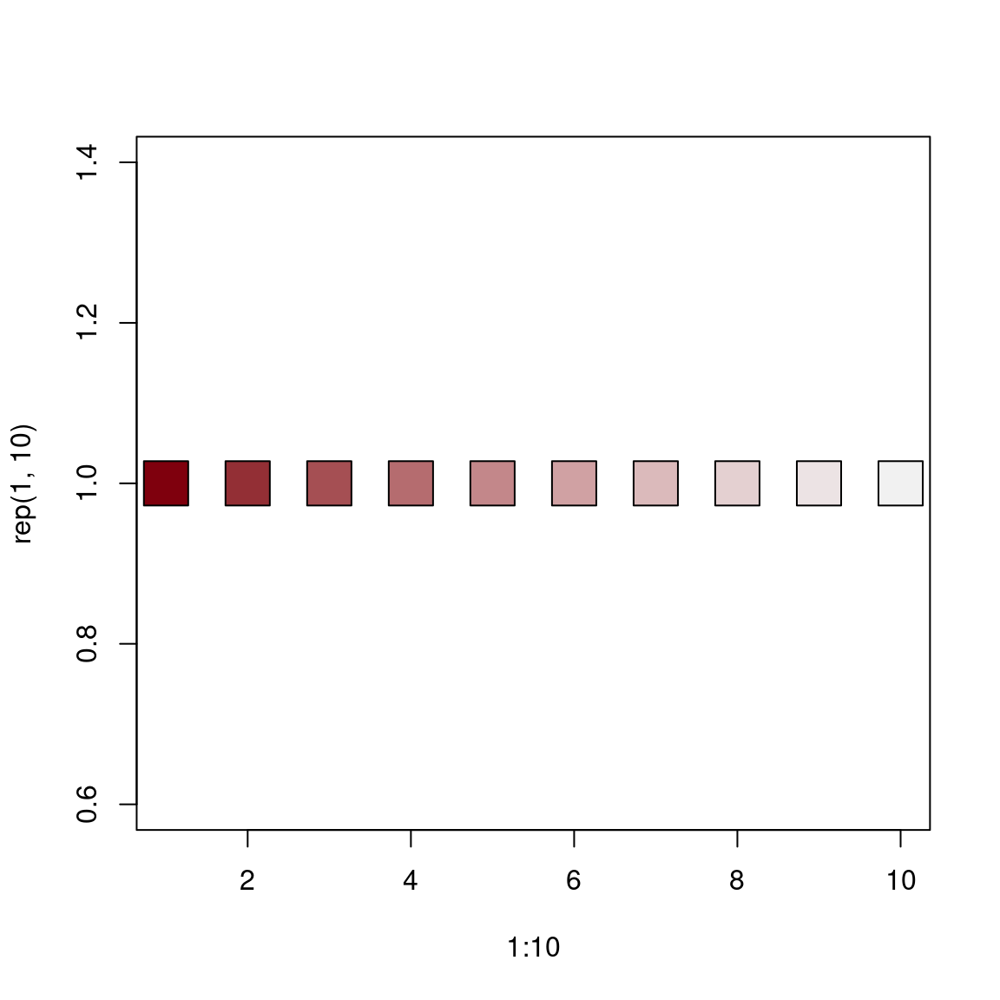
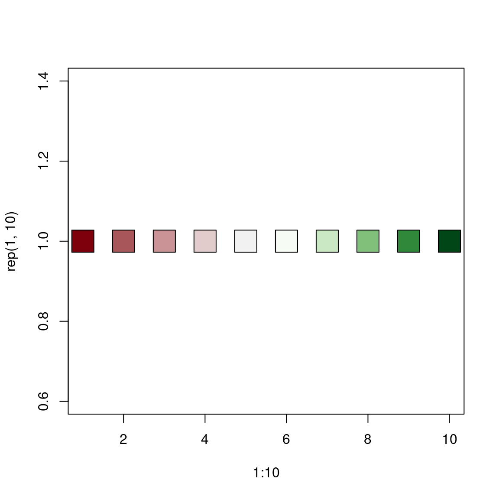
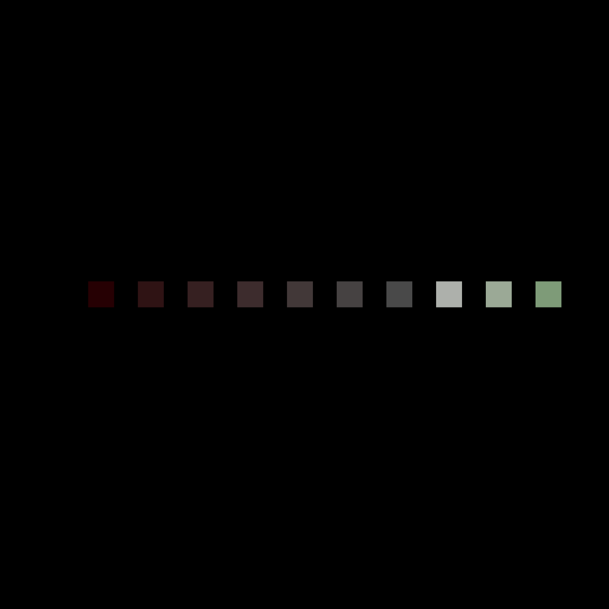
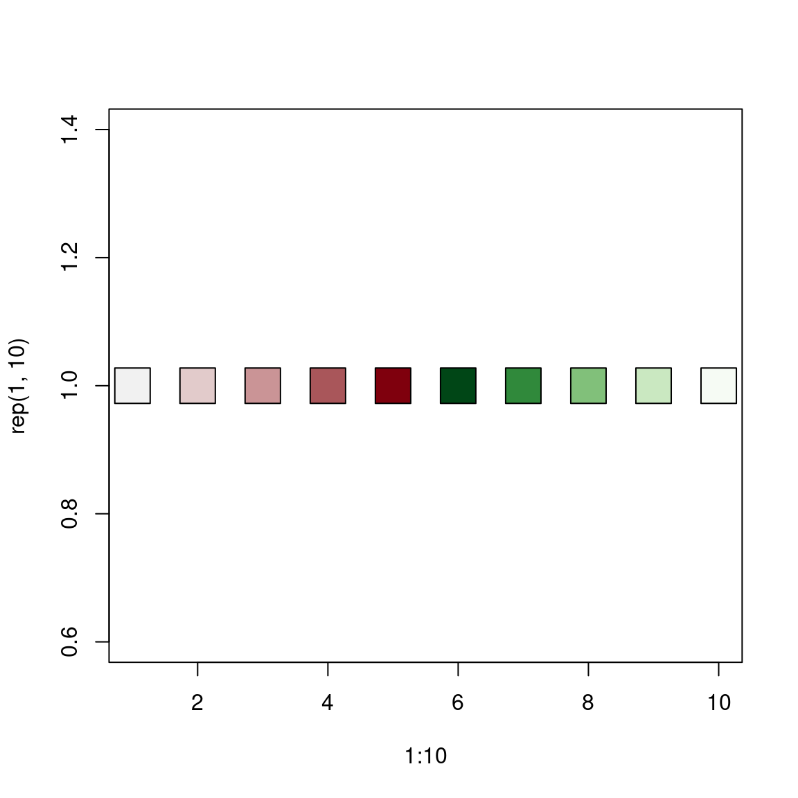

mf_get_pal builds sequential, diverging and
qualitative color palettes.
Diverging color palettes can be dissymmetric (different number of colors in
each of the two gradients).
Usage
mf_get_pal(n, palette, alpha = NULL, rev = c(FALSE, FALSE), neutral)Arguments
- n
the number of colors (>= 1) to be in the palette.
- palette
a valid palette name (one of hcl.pals()). The name is matched to the list of available palettes, ignoring upper vs. lower case, spaces, dashes, etc. in the matching.
- alpha
an alpha-transparency level in the range [0,1] (0 means transparent and 1 means opaque), see argument alpha in hsv and hcl, respectively.
- rev
logical indicating whether the ordering of the colors should be reversed.
- neutral
a color, if two gradients are used, the 'neutral' color can be added between them.
Details
See hcl.pals to get available palette names. If two gradients are used, the 'neutral' color can be added between them.
Examples
cols <- mf_get_pal(n = 10, pal = "Reds 2")
plot(1:10, rep(1, 10), bg = cols, pch = 22, cex = 4)

cols <- mf_get_pal(n = c(3, 7), pal = c("Reds 2", "Greens"))
plot(1:10, rep(1, 10), bg = cols, pch = 22, cex = 4)
cols <- mf_get_pal(n = c(5, 5), pal = c("Reds 2", "Greens"))
plot(1:10, rep(1, 10), bg = cols, pch = 22, cex = 4)

cols <- mf_get_pal(n = c(7, 3), pal = c("Reds 2", "Greens"))
plot(1:10, rep(1, 10), bg = cols, pch = 22, cex = 4)
cols <- mf_get_pal(
n = c(5, 5), pal = c("Reds 2", "Greens"),
neutral = "grey"
)
plot(1:11, rep(1, 11), bg = cols, pch = 22, cex = 4)
opar <- par(bg = "black")
cols <- mf_get_pal(
n = c(7, 3), pal = c("Reds 2", "Greens"),
alpha = c(.3, .7)
)
plot(1:10, rep(1, 10), bg = cols, pch = 22, cex = 4)

par(opar)
cols <- mf_get_pal(
n = c(5, 5), pal = c("Reds 2", "Greens"),
rev = c(TRUE, TRUE)
)
plot(1:10, rep(1, 10), bg = cols, pch = 22, cex = 4)
